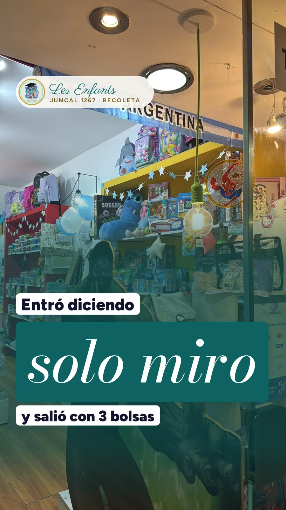

"Solo vengo a mirar"

Acá va el videoLo graba ella con el guion de abajo; el bot lo edita con esta portada.
Escena de humor (atención al público)
Ella hace de clienta y de vendedora: "No, solo vengo a mirar" → corte → la misma clienta en la caja con 3 bolsas. Es el formato que más vistas le dio en TikTok.
Guion
- 0–2 sElla entra por la puerta como clienta: "No, gracias, solo vengo a mirar". Arriba, el gancho.
- 2–5 sElla detrás del mostrador, mira a cámara y sonríe (ya sabe cómo termina).
- 5–9 sLa "clienta" con una agenda, un Nee Doh y los marcadores en la mano: "Ah, mirá esto…".
- 9–12 sEn la caja, con 3 bolsas: "Bueno, ya que estoy…". Cierre con el octágono.
Tomas: 4 tomas de 3 a 5 segundos, celular vertical a la altura de los ojos. Mejor con la luz de la vidriera.
Texto del posteo
Entró a mirar. Salió con una agenda 2027, un Nee Doh y los marcadores que vio en TikTok. A vos también te pasa? Etiquetá a la que siempre "solo mira". Juncal 1267, Recoleta. #LesEnfants #LibreríaRecoleta #Recoleta #HumorDeLibrería
Lo que hacés vos a mano: Grabar las 4 tomas y mandarlas al chat del bot (lo edita él). Al subirlo, elegir un audio que esté sonando en reels.
Lo que necesitamos de vos: Las 4 tomas antes del lunes 23 a la mañana.